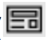
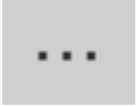

Demo Application
Installing and Running Demo Application
To install and run the demo application:
-
Open solution
Using Microsoft Visual Studio 2015, open the solution file
VGConnectUWPSolution\VGConnectUWPSolution.sln. Ensure that the proper platform is selected (Win32 or ARM). -
Build solution
Build and deploy the solution file.
-
Delpoy Application
To install the application, follow the .
IMPORTANT! Ensure that the computer has a valid installed. -
Launch Application
Find the newly deployed application VGConnectUWPApplication, and then launch it.
- On the bottom is a list of assets in groups such as Live, VOD, etc. Click any asset to select it and view its details. You can edit the fields if you wish, and then click Watch to play that asset.
- Click on any asset to select it. Click it again to return to the playing video.
- The LOG window ( button) displays (and lets you copy) logs produced by the application. Click the button again to hide the log window.
- Click the More button  to select additional functionalities.
- Select All API Calls to open the list of APIs (you may want to open the log window to see API call results).
More about Demo Application
Platform Configurations
In Windows, since the application loads proprietary DLLs (security) that only work in 32 bits, the application has been built and packaged only in win 32-bit and ARM platform configurations and not in win 64-bit.
The DRM DLL, however, is supplied in both 32- and 64-bit versions because it runs inside the PMP process. This process must be 64 bits when running under a Windows 64-bit OS.
LocalState Folder on Windows 10
After deploying the package, this folder is found under %appdata%\..\Local\Packages\VideoGuardDRM_m900y9vwakk0y\
LocalState Folder on Windows 10 Phone
After deploying the package, this folder is found under C:\Data\Users\DefApps\APPDATA\Local\Packages\VideoGuardDRM_m900y9vwakk0y\
LocalState Folder on XBOX One
After deploying the package, this folder is found under U:\Users\DefaultAccount\AppData\Local\Packages\VideoGuardDRM_m900y9vwakk0y\
Playing Alternate Content
-
Locate the application’s
LocalStatefolder. -
Copy the
catalog.jsonfile to theLocalState\Settingsfolder. -
Modify the content of
catalog.jsonto load a different json file, built according to the sample given in the file.
Set Alternate Settings
-
Locate the
LocalStatefolder of the application. -
Copy the
appSettings.jsonfile to theLocalState\Settings - Modify the desired settings according to the sample provided in the file.
Deploy Demo Application to Win10 device
The deployment process is very simple and straightforward:
-
Start create package
Using Microsoft Visual Studio 2015, open the solution file
VGConnectUWPSolution\VGConnectUWPSolution.sln. Right click on the application projectVGConnectUWPApplicationand choose StoreCreate App Packages ... from the menu. -
Create App Packages
Choose No option on the next dialog to specify that you want to build local deployment package. Click the Next button to go to with the next configuration dialog.
-
Select and Configure Packages
- Specify the output package location or use the default one.
- Choose x86 Architecture and Release Configuration. And finally select the Create button to complete package creation.
-
Package Creation Complete
Open output location from the opened dialog. And copy the application package folder
VGConnectUWPApplication_1.0.0.0_Testto dick-on-key. -
Install Application on the device
-
Connect dick-on-key to the device and locate
VGConnectUWPApplication_1.0.0.0_Test/Add-AppDevPackage.ps1installation script file. - Open context menu (by right mouse click) and select Run With PowerShell to initiate deployment process.
-
Connect dick-on-key to the device and locate
-
Launch Application
Find the newly deployed application VGConnectUWPApplication, and then launch it.